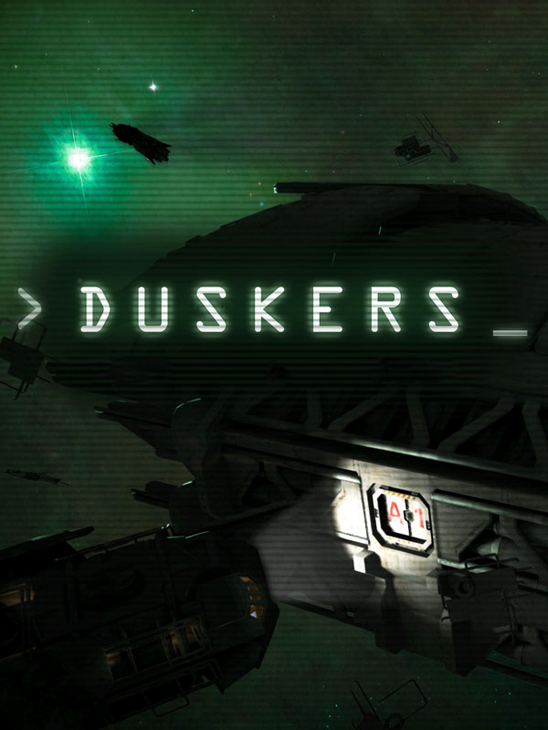

Duskers
Duskers
Details
|  | |
| Playtime | Not Played |
| Last Activity | Never |
| Added | 23/11/2021 11:42:07 |
| Modified | 20/05/2023 2:08:12 |
| Completion Status | Not Played |
| Library | Steam |
| Source | Steam |
| Platform | PC (Windows) |
| Release Date | 18/05/2016 |
| Community Score | 80 |
| Critic Score | 84 |
| User Score | |
| Genre | Indie Strategy |
| Developer | Misfits Attic |
| Publisher | Misfits Attic |
| Feature | Single Player |
| Links | Official Website Steam GOG Wikia Wikipedia Twitch Youtube |
| Tag | [EMT] Logo Missing [EMT] Video Micro missing |
Description
In Duskers you pilot drones into derelict spaceships to find the means to survive and piece together how the universe became a giant graveyard.
But even if you find a way, the sensor that you rely on may break down, or you may run out of lures, even your drone's camera feed can start to fail. A favorite strategy can't be exploited for long, so you'll have to continually adapt.
You are alone, isolated in the dark reaches of space. Only by sifting through what ship logs remain un-corrupted can you piece together what happened.
Features
- Use a Command Line Interface to control drones & ship systems
- Explore procedurally generated derelict ships and universe
- Upgrade and modify drones with the salvage you find
- Discover ship logs and piece together what happened
Explore
You are a drone operator, surrounded by old gritty tech that acts as your only eyes and ears to the outside world. What you hear comes through a remote microphone. What you see is how each drone sees the world. Motion sensors tell you something's out there, but not what. And when you issue commands, you do it through a command line interface.Adapt
You have to earn everything in Duskers, scavenging drone upgrades, drones, and even ship upgrades. But dangerous creatures lurk in these derelict ships, and weapons are rare, so you may need to think of a clever way to explore a military outpost using only a motion sensor and a lure.But even if you find a way, the sensor that you rely on may break down, or you may run out of lures, even your drone's camera feed can start to fail. A favorite strategy can't be exploited for long, so you'll have to continually adapt.
Survive
Duskers is set in a procedurally generated Universe, and when you die you lose everything. You not only need to worry about what hazards lay waiting for you in the derelicts, but also running out of fuel, or parts to modify your drones and ship.You are alone, isolated in the dark reaches of space. Only by sifting through what ship logs remain un-corrupted can you piece together what happened.
Features
- Use a Command Line Interface to control drones & ship systems
- Explore procedurally generated derelict ships and universe
- Upgrade and modify drones with the salvage you find
- Discover ship logs and piece together what happened